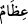
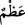
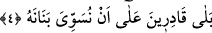

3. İnsan, kendisinin kemiklerini biraraya toplayamayacağımızı mı sanır?
Oysa o diriltilecektir. Âyette yer alan “insan” kelimesiyle insan cinsi
kasdedilmektedir. Şu hâlde buradaki isnâdın herkese, bütün insan cinsine yapılması bir
başka ifâdeyle insanoğlunun, Allah’ın, kemiklerini öldükten sonra toplayamayacağını
sanması bâzı insanların bu zannı taşımaları dolayısıyladır. Âyetin başındaki “hemze”
böyle bir zannı inkâr etmek, kabule şayan olmadığını vurgulamak ve çirkin olduğunu
ifâde etmek içindir.
Âyette yer alan “__WORD__/ızâm”, “__WORD__/azm” kelimesinin çoğuludur. Azm/kemik, canlının
etlerinin üzerinde tutunduğu ana iskelet demektir. Bu kelime aynı zamanda büyük ve
yüce anlamına gelen “aziym” kelimesinin çoğulu da olabilir. Bu açıklamaların ışığı
altında âyet-i kerîmeye mânâ vermek gerekirse; öldükten sonra dirilmeyi inkâr eden
insanoğlunun bu inkârı ve “bizim çürümüş kemiklerini asla toplayamayacağımızı ifâde
eden” sözü bütün bunlar boş zanlardır. Çünkü biz o kemikler darmadağın olduktan,
çürüdükten, dağılıp toprağa karıştıktan ve rüzgârlar alıp o tozları uzak bölgelere
uçurduktan ve denizlere attıktan sonra -insanoğluna dünyada yaptıklarının karşılığını
vermek için- onları toplayıp bir araya getireceğiz.
Rivâyet edilir ki müşrik Ahnes b. Şureyk’in akrabası müşrik Adyy b. ebi Rabia -bu
iki müşrik hakkında- Peygamber (s.a.) Efendimiz: “Ya Rabbi iki kötü komşumun
haklarından gel[192] demiştir. Bir gün Peygamber (s.a.) Efendimiz’e: “Ey Muhammed
bana kıyâmeti anlat, ne zaman kopacak ve nasıl olacak?” diye sorar. Peygamber (s.a.)
Efendimiz adama kıyâmetin nasıl kopacağını, o gün neler olacağını anlatır. Adyy: “O
günü gözlerimle görsem yine inanmam” der. Yâni o günü gözlerimle görsem, gözlerime
bile inanmam der. Sözüne devamla: “Allah bu çürümüş kemikleri toplayacak bir araya
getirecek öylemi? der”. Bu rivâyet ışığı altında âyette yer alan ifâde bu inkârcının sözü
üzerine söylenmiş olmalıdır. Bu tıpkı Yâsin sûresindeki; “Şu çürümüş, ufalanmış
kemikleri kim diriltecek dedi.” (Yâsin, 36/78) âyetindeki soruya benzer.
Bâzı âlimlere göre bu soruyu soran kişi “izam/kemikler”i zikretmiş ancak bununla
insanı kasdetmiştir. Çünkü kemikler bedenin kalıbıdır, yaratıklar ancak düzgün
durduğunda durabilirler.
Bu inkâr cümlesi, söz konusu inkârın şüpheden kaynaklandığını göstermektedir. Bu
şüphe ise sâdece bâzıları için söz konusudur. Allah Teâlâ bütün insanları yeniden
diriltmeye kadirdir. Aklı başında, düşünen ve düşündüklerinden sonuçlar çıkaran
kimseler için bunda şüphe edilecek hiç bir yan yoktur.
4. Evet, bizim, onun parmak uçlarını bile aynen eski hâline getirmeye gücümüz